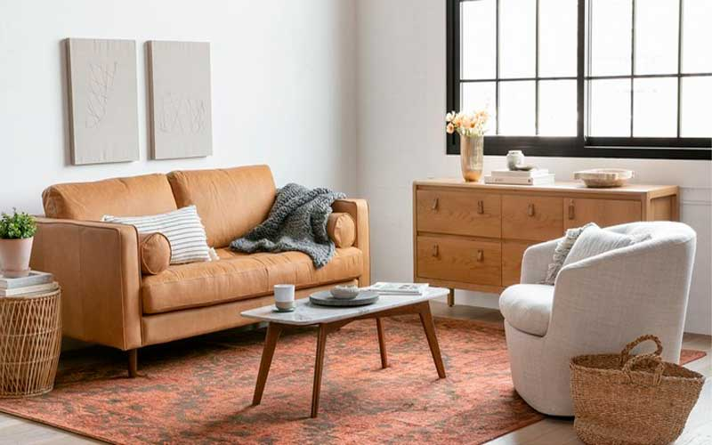

Maderas certificadas
Trabajamos con materiales seleccionados de fuentes responsables.
MUEBLES ARTESANALES
Creaciones únicas hechas para transformar tus espacios.
VER CATÁLOGO
SOBRE NOSOTROS
Somos una mueblería familiar dedicada a crear piezas únicas para cada espacio.
Cada mueble combina materiales de calidad, diseño y trabajo artesanal.
HABLAR CON NOSOTROSNUESTRA COLECCIÓN
Piezas creadas para acompañar tus espacios durante años.
Elegimos materiales de calidad para cada pieza.
Cada mueble recibe atención en cada detalle.
Creaciones pensadas para acompañarte durante años.
COMPROMISO AMBIENTAL
Nuestro compromiso con el medio ambiente guía cada decisión en nuestro proceso creativo y productivo.
Trabajamos con materiales seleccionados de fuentes responsables.
Priorizamos acabados duraderos y materiales de calidad.
Aprovechamos los materiales para reducir nuestros residuos.